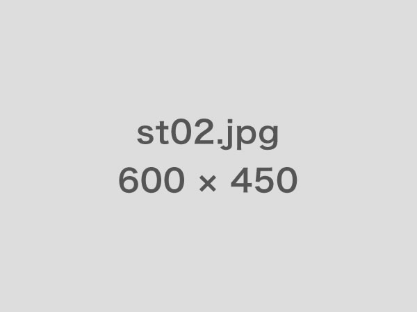

院長・スタッフ紹介
院長紹介

院長 南 敬介
院長略歴
1990年 神奈川県立医科歯科大学 卒業
1991年 きたデンタルオフィス 勤務
1993年 西野歯科医院 勤務
1999年 東山歯科医院 勤務
2002年 デンタルクリニック 勤務
2008年 デンタルクリニック 院長に就任
ご挨拶
デンタルクリニック・院長の南敬介です。
先代である父から続くこの医院は、2014年で40周年を迎えます。
父の代から目標として掲げていたのが、”地域に根付いた歯科医院”であること。
約5年前から始めた、小学生以下を対象とした「こどもデンタル教室」や、3ヶ月に一度行われる地域健康デーの無料診断など、少しでも地域に貢献できればと思い、スタッフやたくさんの方々の協力を得て続けることができています。
歯科治療の技術は年々進歩し続けています。
ですが、患者さんの中にはそんなことを全くご存知ない方だって多くいらっしゃると思います。どんな技術や治療法も、来院してお話を聞いていただけないと知ってはもらえません。
まずは「来院してもらう」こと。そして「知ってもらう」こと。
これが当院のモットーです。
スタッフ紹介

医師 近藤先生
衛生士 芹沢先生
衛生士 武田先生
受付 沖田
受付 山崎